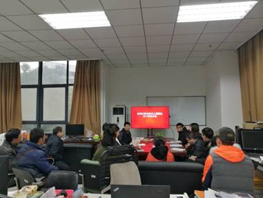
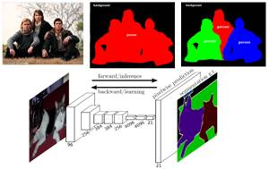
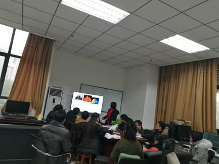
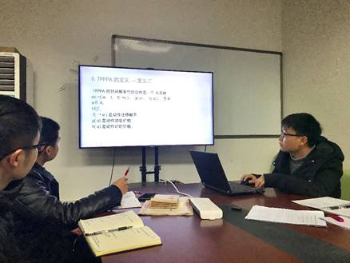
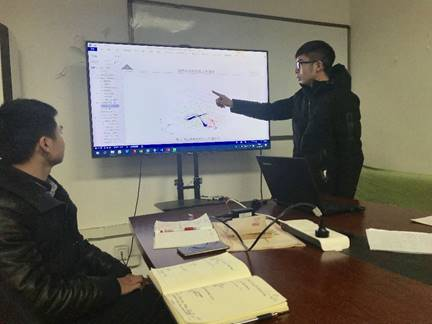
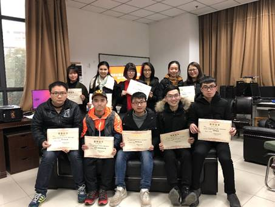
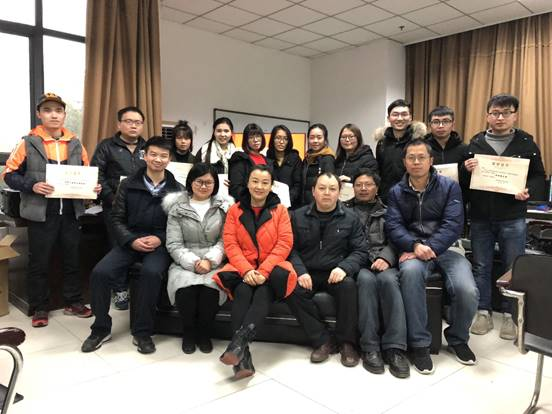

2017年度总结大会
主编：小唐 摄影师：骆蓉、刘欢
2018年2月4日下午15点，西南科技大学计算机学院科学计算实验室开展了本年度总结大会，到会人员有团队负责人刘志勤教授，黎茂锋、黄俊、王庆风、毕国堂、苏波等负责团队建设的老师，刘欢、蒙小龙、冯姣、骆蓉、唐怡、罗国婷、张弛名、蔡文杰、罗斐等九名研究生以及陶文龙、张紫琳两位本科生。会议分为三大部分，首先由各位同学总结近期所学所得；其次由罗斐和罗国婷两位同学做学术分享，蒙小龙同学做自然基金申报分享；最后由刘志勤老师和黄俊老师做学期总结并为同学们颁发奖状与奖金。
这次总结会议也是本学期最后一次例会，所以同学们难免有一点点小小的激动。

额…,最激动的好像是我们的黄老师（请放大图片观看）。根据同学们的总结可以看出大家近期都收获颇多，留校准备论文发表的同学，论文已大致完成，而参与项目研发的同学，项目进展也还算顺利。
学术分享部分首先是由罗国婷同学开始，她为大家分享了关于全卷积网络语义分割的相关知识点，这是一篇2015年发表的文章，题目是“Fully Convolutional Networks for Semantic Segmentation”，其亮点在于提出将“跳级”运用于卷积网络中，以达到目标提取高精度的目的。
同时还为大家普及了用于语义分割的全卷积网络框架解析及构造中的三个技术难点和重点：其一是全卷积网络层；其二是反卷积层；最后一个是跳级结构。大家都听得极度认真哟，借着罗国婷同学的分享，刘老师、王老师也为我们研究生同学提了一些读论文、分享论文以及写论文的宝贵意见。


罗斐同学分享的是“基于时间概率代价进程代数的 Web 服务组合建模和分析”，基于时间概率代价的进程代数TPPPA不仅考虑了web服务组合建模的功能需求 ，还重点考虑了web服务组合建模的Qos需求，分享过程中罗斐同学重点为我们阐述了进程代数TPPPA的多条定义及相关表达式，并举出实例进行分析。针对罗斐同学的分享黎老师、黄老师、毕老师给做Web 服务组合方向的同学提了一些宝贵意见。

接着是小龙师兄为大家分享他写的“国家自然基金申报书”，主要是为了和老师们讨论申报书的题目以及核心工作部分是否合适的问题。申报题目是整个会议讨论最激烈的部分，大家一言一句的提出各自的看法，最终解决了小龙师兄的困扰，所以团队的力量还是非常可靠的。

严肃的学术分享之后，是大家最期待的环节了，那就是———颁奖（有含金量的哟）
（￥-￥）人人都有份，所以光哥和闫博文师兄不要着急，给你们留着呢。在这个开心的日子我们的男同学们着实享受了一把特殊待遇，不过小龙师兄和蔡文杰同学貌似还不太习惯如此优待哈。

总结大会开了，放假、过年还会远吗？所以小编在这里提前祝各位老师新年快乐、万事如意、工作顺心、身体健康；祝各位同学新年快乐、心想事成、学业进步，天天开心。最后奉上一张全家福。
